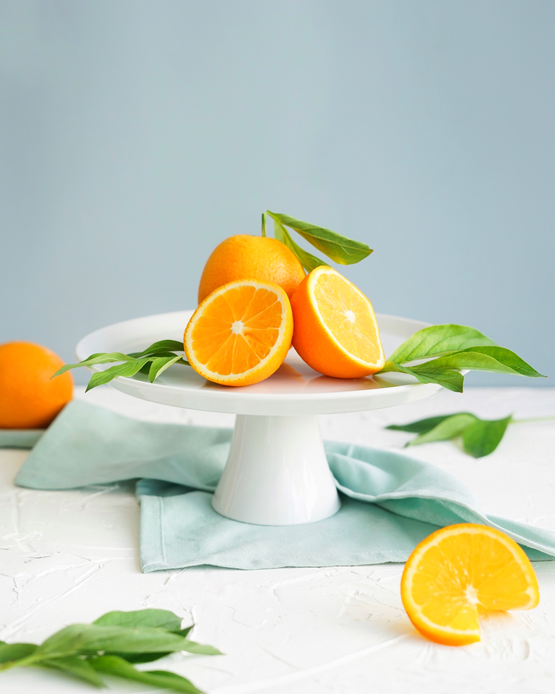
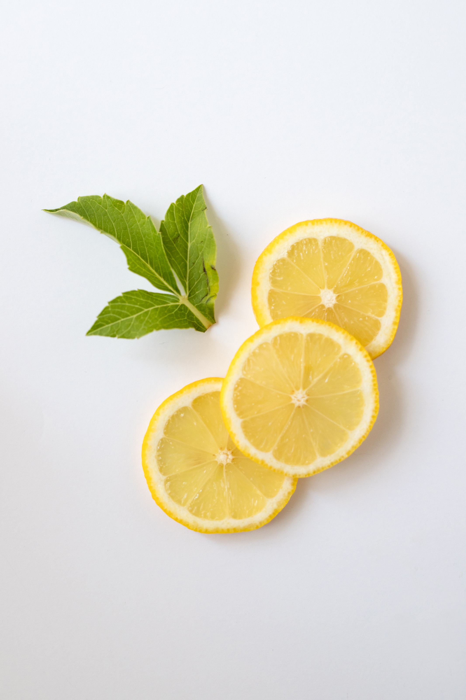
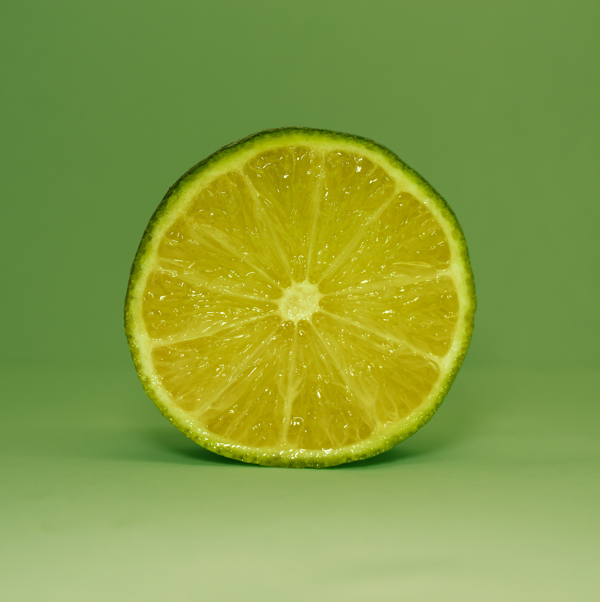

Citruses

-Around 85% of all oranges are used for juice.
-There are 600+ varieties of oranges
-Orange peels can be used as slug repellent

-Lemons are believed to be a hybrid between a sour orange and a citron.
-California and Arizona produce 95 percent of the entire yield of lemons.
-An average lemon contains 8 seeds.

-Lime is a rich source of dietary fibers and vitamin C, however, it has 4 times less vitamin C than lemon.
-Lime is small tree that usually grows to the height of 16 feet..
-Scurvy (disease that results from vitamin C deficiency) was widely spread among the sailors in the 19th century. Since lemon was expensive, lime was selected as second best natural cure for this disease.